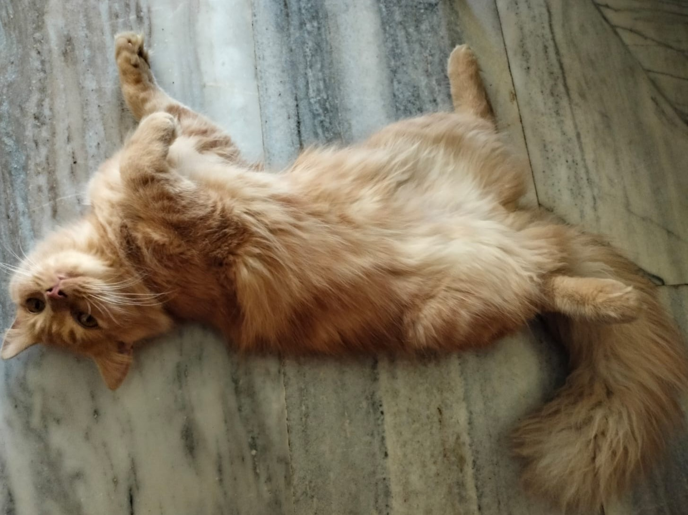
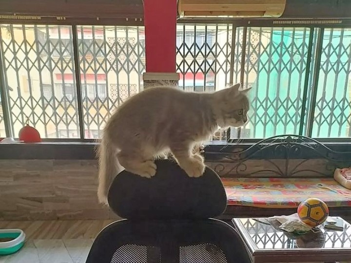
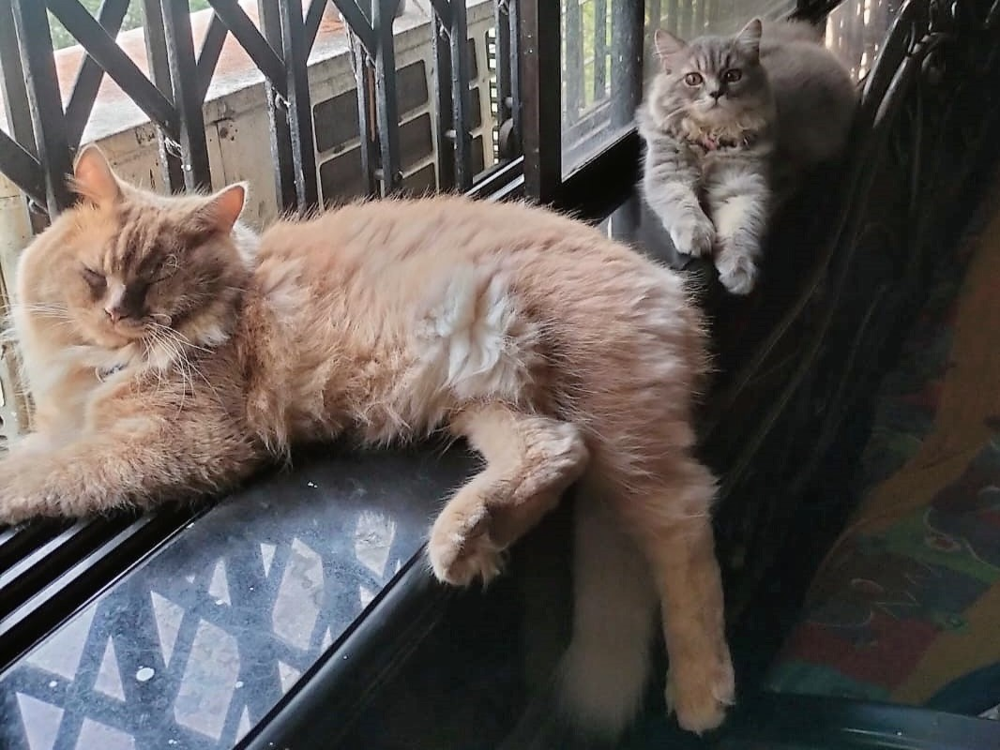

Why cats sleep so much.
Cat person? How many pictures of your cat sleeping have you got on
your phone? A lot, right? Cats exhibit plenty of weird behaviors, such
as kneading, hiding in small places and hanging out in boxes, but
averaging about 12-15 hours of sleep every day is perhaps the
strangest thing domestic cats do. Older cats may stretch this to 20
hours per day! Old age and the folly of youth, that’s understandable;
they take their toll. What’s wearing out the rest of them? Although no
conclusive answers are found yet to solve the mystery of
Cats and Sleep, there are three popular theories.

Cats are crepuscular
Cats are crepuscular, which means they are most active during low
light times of day, including dawn and dusk. This is probably because
such low light conditions are the best time for stealthy hunting.
Since humans sleep at night and are awake during the day, it might
seem like cats are always asleep. But the reality is that you may just
be sleeping for most of the time when your cat is active.
Read more

Cats are predators
Simply put, sleeping so much is in cats' nature. Both domestic and
wild cats are carnivores (meat eaters), and in general, carnivores
sleep more than herbivores. Despite the long hours cats spend curled
up in dreamland, they are but lazy — they are resting up to conserve
energy and recharge in preparation for the big hunt. Hunting requires
energy and then you add the stress factor of cats being both predator
and prey, explains cat's sleeping behavior. Your cat may be
domesticated and eat the cat food served by humans instead of hunting
dinner, but cats retains the biological impulse of her wild ancestors.
Read more

Cats get bored easily
Cats are usually very playful and curious creatures. Shine a laser
pointer on the wall and they will start doing crazy stunts to get to
it! But this also means that they need active attention and new
stimulus to keep them going. In the wild, this happens naturally by
stalking and hunting prey. But in the safety and comfort of a modern
house, they have nothing to do and thus they doze off till something
exciting comes by.
Read more